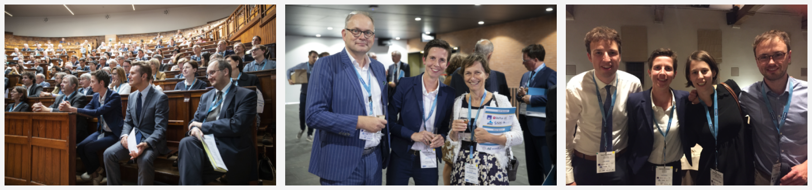

About Me
Mathematician by training I am interested in data analysis, statistics, machine learning and mathematical modelling with a particular focus on insurance problems. I combine a professor position at KU Leuven (Research Centre Insurance) with a part-time position as associate professor at University of Amsterdam (with the Amsterdam School of Economics, section of Quantitative Economics). I am co-director of LRisk, the Leuven Centre for Insurance and Financial Risk Analysis.

My research projects are data driven, and find direct inspiration in collaborations with insurance companies or pension funds. The challenges raised by these insurance problems naturally create spill-over effects to other fields (e.g. pricing service contracts offered by OEMs) and to more methodogical contributions (e.g. the SMuRF package).
I love teaching and have extensive experience with teaching at all levels of higher education, coordinating courses for both small and large groups of students. More about my courses. Teaching abroad and creating in-company workshops related to my research agenda allow me to further expand my horizon. I serve as the program director of the MSc of Actuarial and Financial Engineering at KU Leuven.
With my former PhD student Roel Verbelen I run the DataCamp course on Valuation of Life Insurance Products in R.
